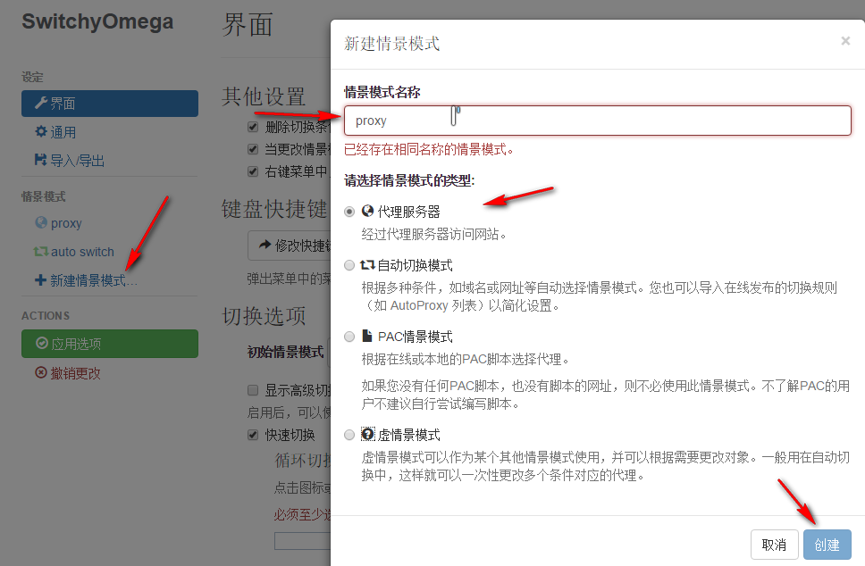
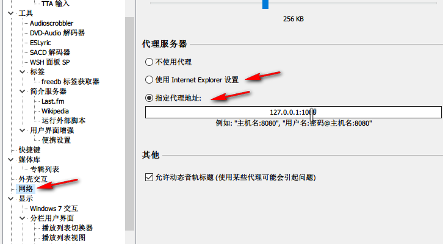
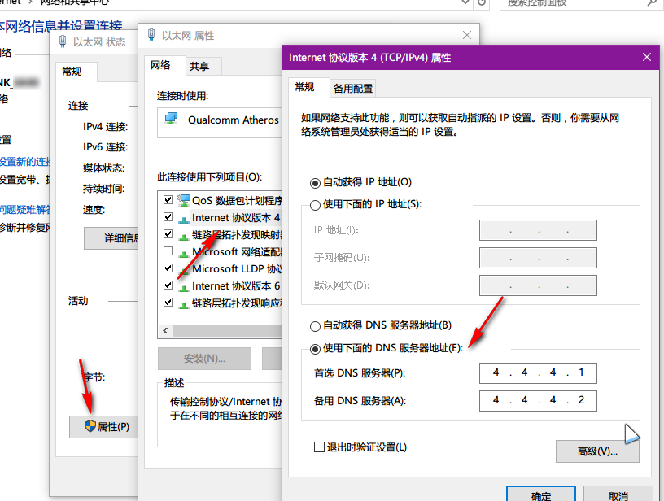

这里是 FAQ。在本页中我将会对代理设置中的常见问题进行说明，页面还在完善中，请关注更新。
1，准备事项
同前，请向管理员申请账户信息。
通常会以二维码图片形式下发，请注意查收邮件。
在提出问题之前，请参阅这篇文章，如果有必要向管理员咨询，请在截图重要位置打码（ex. 服务器地址及端口信息，你的个人身份信息等），以免带来不必要的麻烦。
请习惯使用电子邮件交流，以后不再在 QQ 等即时聊天工具中接受各种意义上的咨询，除非你对本项目有实质支持（你懂的）。
前页中已经介绍了如何添加账户信息并启用软件的，默认情况下配置完成即可正常上网。以下的解决方案可能只会写到核心步骤，请善用搜索引擎配合。
本页的目的是帮助用户正常使用网络，高级配置相关也请善用搜索引擎。
2，How to
问题没有先后顺序，但被问的比较多的会放在前面，想到哪儿写到哪儿。
- Q：为什么配置完代理软件之后 IE 还是不能上 Google？
A：你可能需要修改 IE 的代理设置。如图，默认情况下 Shadowsocks 会自动接管代理配置，当且仅当配置不正确时，你可以考虑修改这里。
配置脚本地址形如 http://127.0.0.1:1080/pac?t=20151231134507 的形式，?t= 后面接 PAC 脚本的更新时间，你也可以不加时间戳。
如果你不确定如何修改，可以尝试直接更新本地 PAC 文件，此处设置会随之修改。
- Q：Chrome 应如何配置代理？
A：建议安装插件 Proxy SwitchyOmega 接管 Chrome 自身的代理设置。设置方法参考插件官方手册： link
等同于 IE，SwitchOmega 的配置可以是这样：

我们选择“代理服务器”模式，输入名称后单击“创建”。
这里我们不使用 Shadowsocks 自带的 HTTP 转发，直接通过 SOCKS5 协议和软件通信。同样填好服务器地址和通信端口，这样就配置完成了。
使用时单击浏览器工具栏的插件图标，选择相应的模式即可正常上网。

另外也可以通过订阅 AutoProxy 规则或使用 PAC 列表完成配置，这样会更加智能一些。
- Q：我的系统是 Windows 10，为什么 Edge 浏览器无法上网？
A：正常情况下 Edge 和 IE 共用一套代理设置，所以请参照 Q1 检查 IE 代理浏览器设置是否存在问题。
如果检查没有问题，可能是 UWP 应用的网络设置出现了问题。正常情况下 UWP 应用运行在独立的沙盒环境中，需要额外配置代理。
有很多小工具提供这种设置功能，我们以 Windows Modern Apps Tools 为例。你可以从这里获取到这个软件：link
打开工具，选择第四个选项卡“小应用网络设置”，找到 microsoft.microsoftedge，选中后单击“允许选中项目使用本地代理”按钮。
至此设置完成。
- Q：我能否将其他程序也设置为使用 Shadowsocks 代理？
A：可以。只需要在有需求的软件中设置代理选项为“使用 IE 代理”或手动输入代理服务器地址即可。
UWP 应用的设置请参照 Q3。
通常情况下不需要为迅雷等下载工具设置代理，某些情况下可能会拖慢下载速度。

- Q：为什么我现在只能上 QQ，浏览不了网页？
A：这个问题比较复杂，首先请你检查本机的网络设置是否依然存在问题，如 DNS 设置，代理设置等。刷新 DNS 缓存的办法：
在命令提示符或 PowerShell 中输入 ipconfig /flushdns
修改本机 DNS 服务器地址：

或者使用某些工具软件提供的网络修复功能也可以。
- Q：为什么速度那么慢？
A：网络连接状况受限于你的宽带服务商所提供的网络带宽以及当前国际出口网络状态。高峰期国际出口的拥挤程度较高，连接情况肯定会不太理想。需要注意的是，因为并不只有您一人使用本服务器上的代理服务，所以多人在线也会对其他人的网络情况产生影响。如果你有空闲的国内服务器资源，可以和我合作以改善服务质量。我会尽量保证服务不掉线，网速我并不能完全保证。
3，其他说明
我们知道院里有堵墙，大家都想从墙上打个洞出去。您要记住的就是：出门别丢自己脸。吃枣药丸，过活一天是一天。有任何问题还请与管理员邮件联系，我们会尽力解答。就酱。